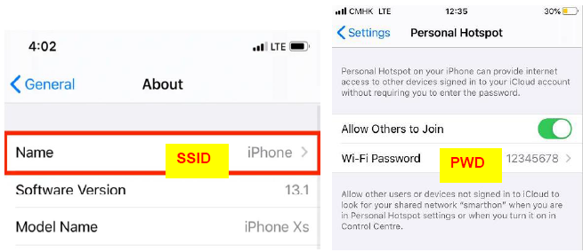
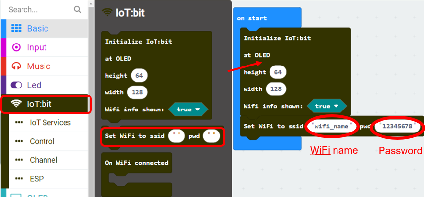
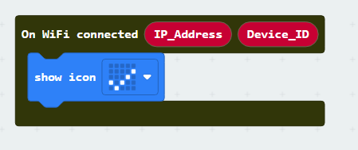
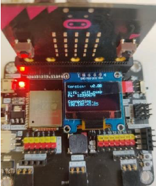
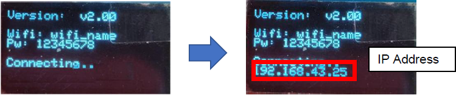
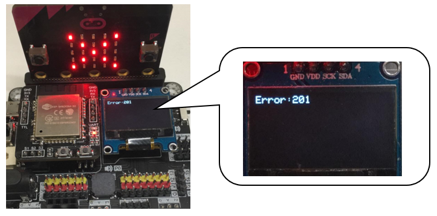

4. First step: Connect the micro:bit to the Wi-Fi¶
Connecting Wi-Fi is the very first step to access internet services, including ThingSpeak, IFTTT, email, etc. Before you start, make sure your micro:bit device is connected to the Internet.

4.1. Open the Home Router or Mobile Phone Hotspot¶
Please sure there is a Wi-Fi signal (with 2.4GHz) available in your area.
*5GHz Wi-Fi signal is not supported
You can either setup a home router or a Wi-Fi hotspot from your mobile phone.
a) Setup your home/office Wi-Fi

b) Setup your mobile phone Hotspot
* make sure your phone has internet service.

For android:

For iPhone:

4.2. Programming (Makecode)¶
Step 1: Initialize the IoT:bit
Before you start, you need to initialize the IoT:bit.
Go to IoT:bit tab.
Snap
Initialize IoT:bit TX P16 RX P8toon start
Step 2: Connect to the Wi-Fi
After initializing, you can connect to the Wi-Fi
Go to IoT:bit tab
Snap
Set Wi-Fi to ssid pwdtoon startfollowing initializeEnter your Wi-Fi name and password. Here we set
smarthonasSSIDand “12345678” aspassword. 
Step 3: Show the Tick if it is connected
On WiFi connected is an event handler. It will be triggered once after connected with WiFi.
After the WiFi is connected, it provide two variable IP_Address and Device_ID for you to
control the IoT:bit though network.
Snap
On WiFi connectedto the stageOn
Basictab, snapshow icon heartinsideOn WiFi connectedSwtich the heart to tick

Step 4: Show you IP
If you want to see the IP address, you may show it on the OLED display.
Go to OLED tab
Snap “initialize OLED with width…height..” to on start
Snap the “show string“ inside the On WiFi connected
Draw the variable from On WiFi connected to the “show string” block placeholder
You may control the text format by the function in Text tab

Optional:
On WiFi disconnected handler will be triggered when the WiFi connection is loss, it may useful when you get disconnection to the WiFi Station during the application running.

Full Solution
MakeCode: https://makecode.microbit.org/_0bv5b2RPWCCE
You could also download the program from the following website:
4.3. Result¶
Step 1
Load the program to the micro:bit and turn on the IoT:bit by using USB
. 
Step 2
Wi-Fi IoT:bit will start to connect to internet, when the connection is successful, the IP Address would be shown. AND the tick icon will be shown.

After the IoT:bit is connected to the wifi, when disconnect to the router. It will show “cross” symbol and the error code will be shown. Normally, the code 201 means “No AP Found”.
The reason might be:
Router is too far away
No that AP actually
The typo on SSID/PWD
